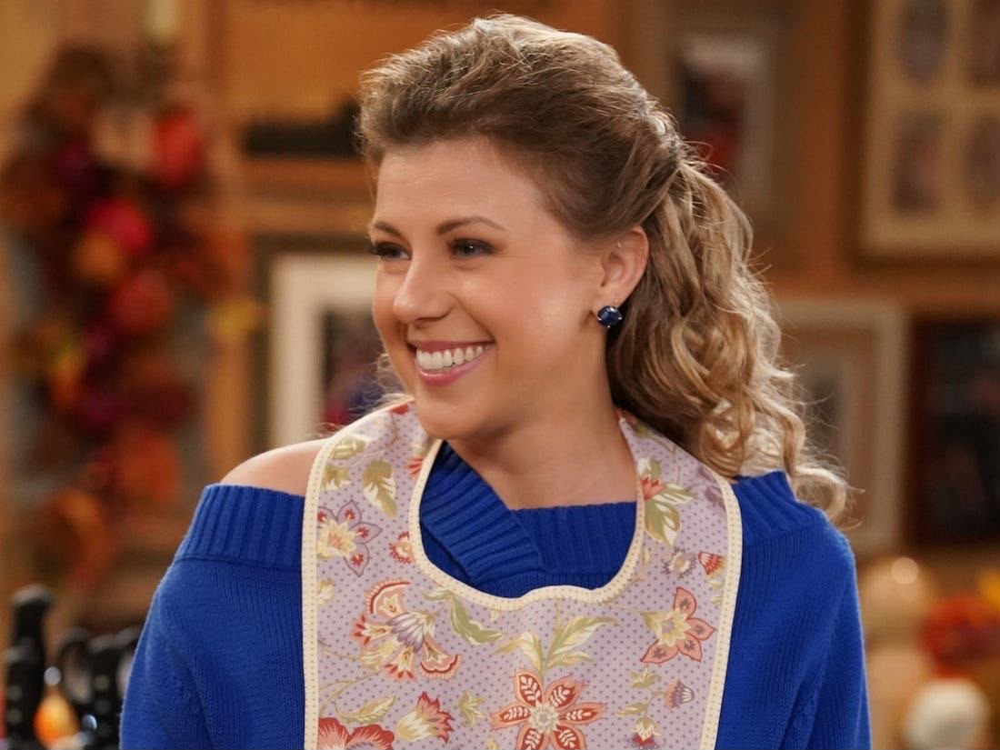
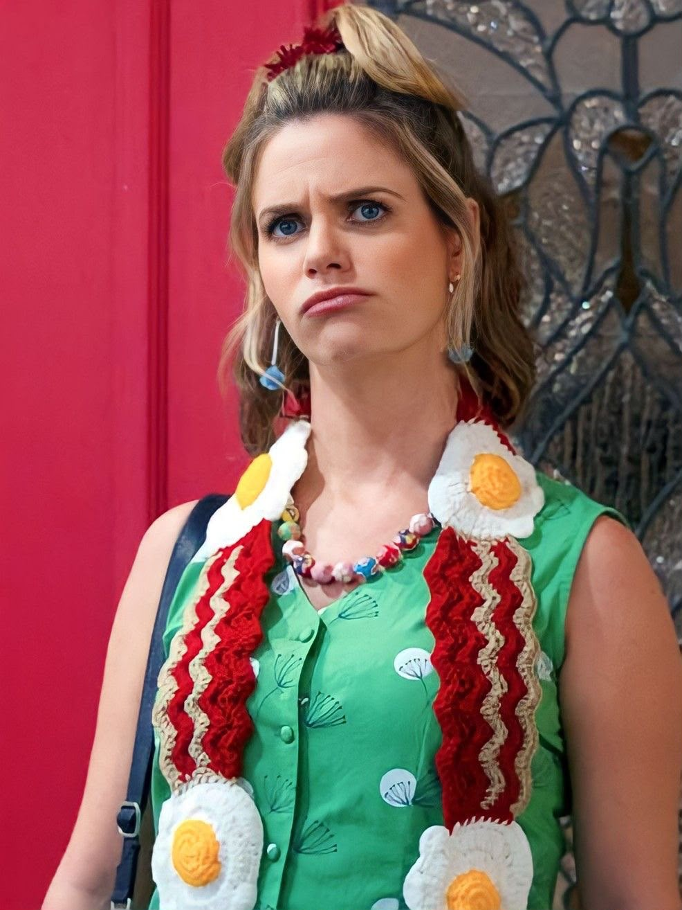
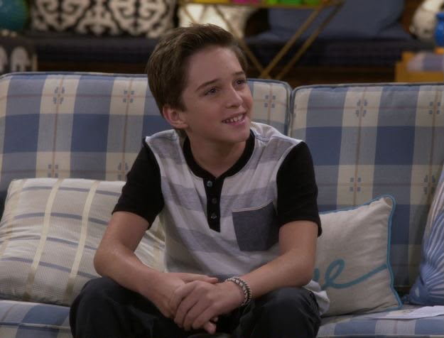
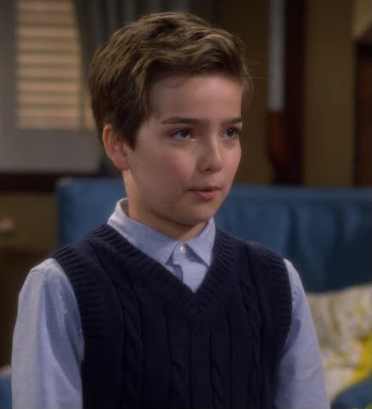
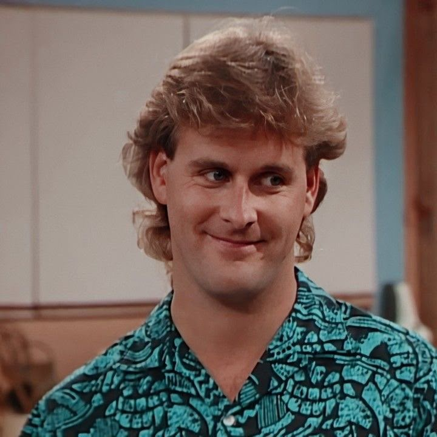
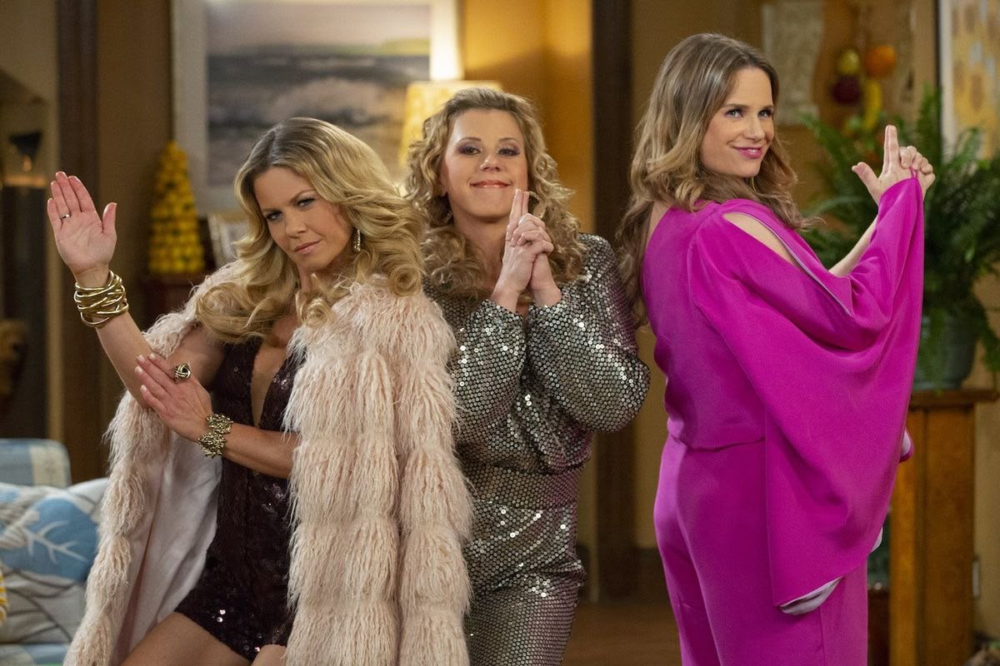
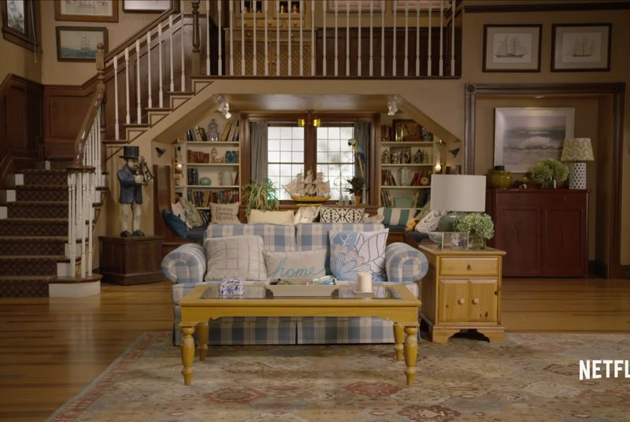

Conocé a los personajes que forman parte de Fuller House y a aquellos que también formaron parte de la primera parte, Full House.
Viuda y madre de tres hijos. Es veterinaria, responsable y muy familiar. Vive junto a Stephanie y Kimmy, quienes la ayudan a criar a sus hijos.

Hermana menor de DJ. Es divertida, espontánea y muy unida a su familia. Deja su vida como DJ para ayudar a DJ y termina formando su propia familia.

Mejor amiga de DJ desde la infancia. Es excéntrica, divertida y muy energética. Se muda con los Tanner-Fuller junto a su hija Ramona.

Hijo mayor de DJ y Tommy Fuller. Es adolescente, algo impulsivo y divertido, y suele meterse en situaciones complicadas.

Segundo hijo de DJ. Es inteligente, organizado y muy particular. Tiene una personalidad madura para su edad y es amante de los animales.
Hijo menor de DJ. Es un bebé al comienzo de la serie. Se llama Tommy Jr. en honor a su padre, Tommy Fuller, quien falleció antes del comienzo de Fuller House.
Padre de DJ y Stephanie y abuelo de los hijos de DJ. Sigue siendo cariñoso, protector, ordenado y muy dedicado a su familia.
Tío de DJ y Stephanie. Músico, carismático y muy familiar. Continúa casado con Becky y mantiene una relación cercana con toda la familia.

Gran amigo de Danny y Jesse y una figura muy cercana a la familia Tanner. Es comediante, divertido y conserva su personalidad infantil y alegre.
Exnovio de DJ de la adolescencia. Sigue enamorado de ella y vuelve a formar parte importante de su vida. Trabaja como podólogo.
Hija de Kimmy y Fernando. Es segura, independiente y creativa. Crece junto a los hijos de DJ y se convierte en parte de la familia Fuller.
Veterinario y compañero de trabajo de DJ. Es amable y tranquilo, y durante la serie mantiene una relación amorosa con ella.

